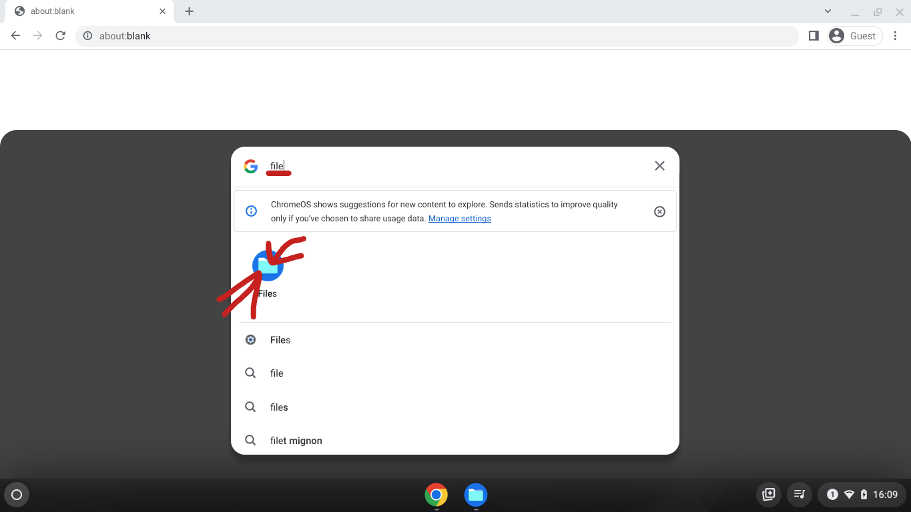
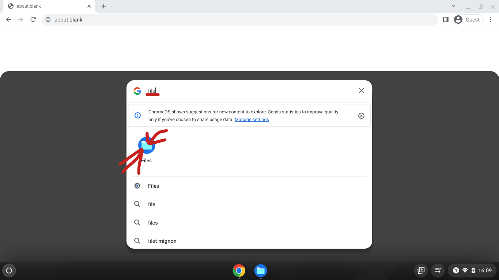
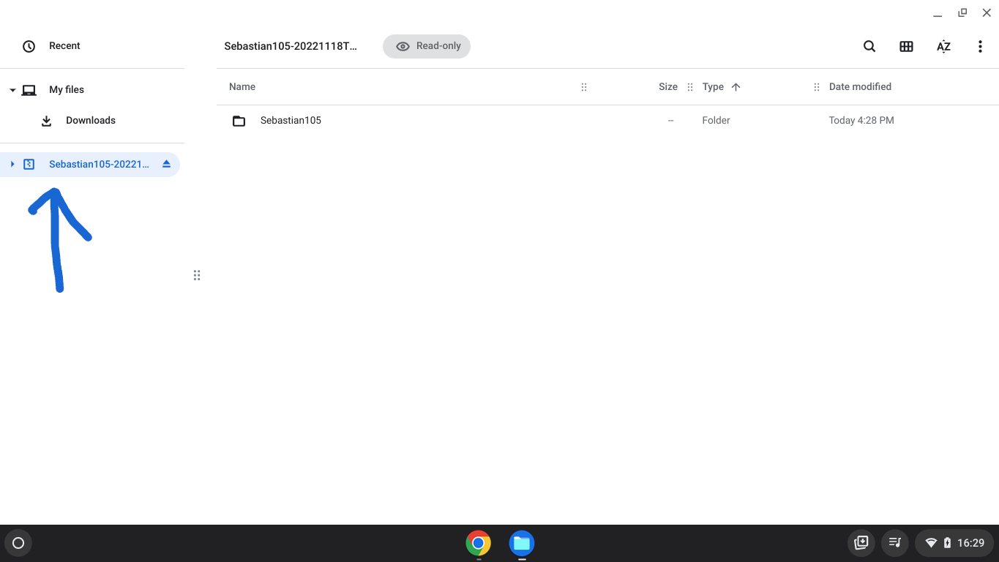
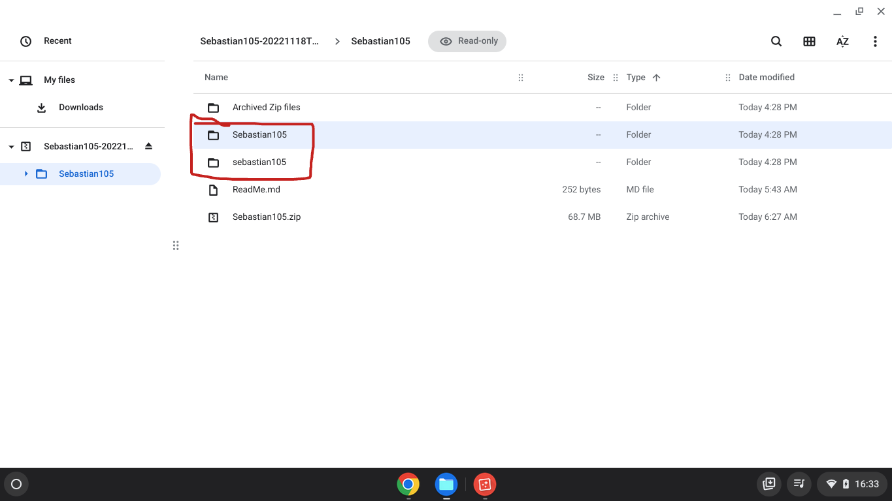

1). Click this link ---> Link
2). Then press download all in the upper right hand corner
2.5). Wait for it to finish downloading.

3). Then click your files app by pressing the dot at the bottom left hand corner of the screen and searching "file" and pressing enter.
 -----> 
-----> 
4). now go to your downloads folder

5). You have a couple options here. Option 1: Double click (click it twice) the .zip file named "Sebastian105-20221118T211523Z-001" (or something similar) (you can rename it to whatever you want).

6). then you should see something like this. (note: I am on a guest account so you will have a drive part under the downloads section) (Note2: the blue arrow is important make sure you have that .zip file thing there).
7). now you can double click the Sebastian105 folder. Then double click one of these. . .
8). After that you double click index.html (doesnt matter which folder)

9). If you choose "sebastian105" folder to open the index.html file, than you have to make sure to not close the zip file. If you do it wont work.
1). Option 2: (This option takes longer and is harder to understand so you might just want to stick to option 1. Also I wont include pictures so you just have to deal with it). You right click the file, on a chromebook you press alt and simultaneously click the file. You should see a menu appear under it. If not then you screwed up somehow.
2). In the menu you should see a option that says "extract all", click that. Once that happens you have to wait (the time varies with the size of the file and said computers framerate).
3). Congratulations! You have just made a editable folder with my code in it.
4). In order to edit it you have to get a text editior tho. . . so . . . yeah. . .
5). From here on out its your decision on what you do next. I'm not going to teach you how to code, But I hope this came in handy.
also if the I.T. department blocks this than just rename the folder or the zip file. (for you nerds, it creates a new-unblocked-url).
One more thing. . .
If you ever create a dupicate of this site. . .
CITE ME!!!
I trust you will cite me because I just spent a solid hour on this page alone and you wouldn't rip me off, now would you?